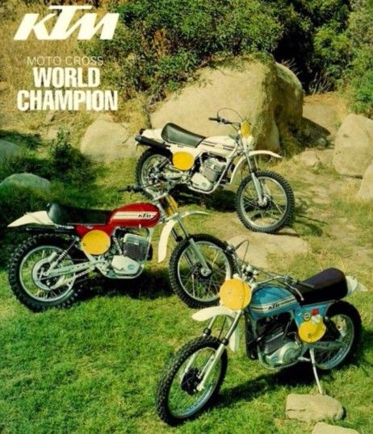

The KTM 350 EXC-F is a beast of an enduro, probably the best (in competition) with very good quality and advanced technics.
It comes with a higher price, costs and more regular maintenance intervals.
When you click on the poster, you will be forwarded to the website of the KTM-museum in mattighofen, Austria.
KTM, Motocross World Champion,
Advertisement by KTM, around 1968